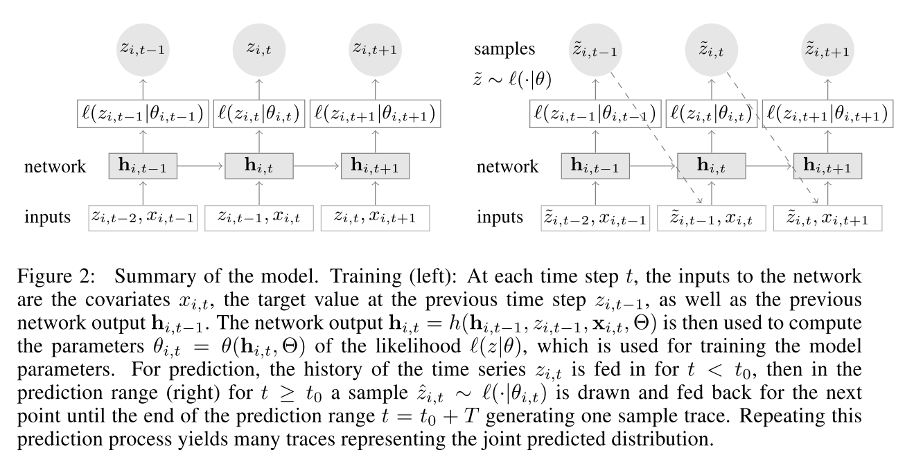

0%
- 来源：arXiv-2019
摘要
概率预测，通过时间序列给出的过去预测其未来的概率分布，是优化商业过程的关键。如：在正确的时间和地点预测可用的库存是至关重要的。文章提出一种基于在大量相关时间序列上训练一个自回归循环网络模型的精确概率预测方法DeepAR。在多个真实数据集上测试，准确度较其他先进方法提升约15%。
引言
DeepAR，一种基于自回归循环网络的预测方法，从数据集所有时间序列的历史数据中学习一个全局的模型。
- 文章的两个贡献：
- 提出了一个用于概率预测的RNN，整合了一个用于计数的负二项似然，以及一个当时间序列的magnitudes广泛变化的时候的特殊对策。
- 在若干真实数据集上经验性的证明了该模型对一众输入特征可以得到精确的概率预测；展现了现代深度学习方法可以有效的应对概率预测问题，这与该领域普遍的观点和结果形成了对比。
- 除了比先前的方法能提供更好的预测精度之外，文章提出的方法与典型和其他全局方法相比仍有一众的优点：
- 随着模型根据时间序列学习季节性行为和给定协变量的依赖时，最小的手动特征工程被需要以捕捉复杂、依赖于组的行为。
- DeepAR以蒙特卡罗样本的形式进行概率预测，可用于计算预测范围内所有子区间的一致分位数估计。
- 通过学习相似项，我们的方法可以对有很少或者没有历史的项进行预测，而传统的单一预测方法不可以。
- 方法不假设高斯噪声，但可以包含广泛的似然函数，允许用户为数据的统计属性选择合适的项。
- 特别在需求预测领域，人们经常面临高度不稳定的、间歇的、突发的数据，这违背了许多典型技巧的核心假设，如高斯误差、平稳性或时间序列的同方差性。
- 两个主要特征使预测设置不同：
- 在概率预测中，人们感兴趣的是在下游决策系统中使用的完整的预测分布，而不是单一的最佳实现。
- 为了获得(无界的)计数数据的精确分布，我们使用负二项似然，它提高了准确性，但阻止我们直接应用标准数据标准化技术
模型
